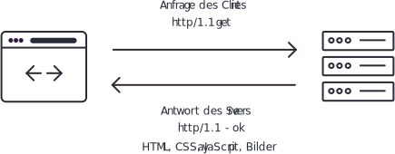

Websites/Webanwendungen
Websites bzw. Webanwendungen werden mit Hilfe des http-Protokolls über ein Netzwerk übertragen und im Webbrowser angezeigt. Dafür müssen die Daten, aus denen die Webseite besteht, zuerst von einem Server per request angefordert. Danach werden die Daten per response an den Client geliefert. Neben der reinen Datenübertragung gibt es noch diverse Kommunikationsmöglichkeiten zwischen dem Server und dem Client. So kann der Server den Client zum Beispiel darüber informieren, wenn das angeforderte Dokument nicht zur Verfügung steht.
Im traditionellen Webanwendungsmodell wird über den Webbrowser (Client) durch die Eingabe des Anwenders eine Anfrage an den Webserver (Server) gestellt.

Der Webserver antwortet, wenn die Anfrage erfolgreich war, mit einem ok und den angeforderten Daten.
In traditionellen Webanwendungen arbeiten Webbrowser und Server synchron. Das heißt, der Webbrowser sendet eine Anfrage an den Server und wartet so lange, bis diese beantwortet wird. Asynchron hingegen bedeutet, dass die Ausführung nicht angehalten wird, um auf eine Antwort zu warten. So ist es möglich, große Bilder oder lange Textabschnitte nachzuladen, ohne dass eine neue Webseite aufgerufen werden muss. Auch die Eingaben eines Benutzers können sofort bei der Eingabe kontrolliert werden.
PHP
PHP wurde unter der Bezeichnung “Personal Homepage Tools” 1994 von Rasmus Lerdorf als eine Sammlung von Perl CGI-Skripten geschaffen. Diese sollten die Funktionalität seines Webauftritts erweitern. Nach mehreren Phasen der Erweiterung der PHP-Funktionalität schrieb Lerdorf eine Umsetzung in C. Kurz darauf entschloss er sich, den Quellcode zu veröffentlichen und zur Weiterentwicklung freizugeben.
1998 schrieben Andi Gutmans und Zeev Suraski große Teile des PHP Quellcodes für ein Unversitätsprojekt um, da sie mit der Performance der bisherigen Version nicht zufrieden waren. Sie veröffentlichten PHP in der Version 3 und legten damit den Grundstein für die aktuellen Versionen. Seitdem hat sich PHP immer mehr als wesentlicher Bestandteil der Programmierung im Internet etabliert und wurde fortlaufend verbessert. Im Dezember 2015 wurde zuletzt PHP 7 veröffentlicht. Heute steht PHP für “PHP Hypertext Preprocessor”.
Wie funktioniert PHP
Als Programmiersprache, die hauptsächlich auf einem Webserver eingesetzt wird, ist PHP für die Erstellung von dynamischen Inhalten für Websites bzw. Webanwendungen gedacht. PHP ist eine sog. interpretierte Programmiersprache. Dies bedeutet, dass ein PHP-Programm nicht, wie beispielsweise in Java oder C++, zuerst in maschinenlesbaren Bytecode umgewandelt und dann ausgeführt wird. Der PHP Interpreter führt beide Schritte, Verarbeitung des Quellcodes und Umwandlung in ausführbaren Bytecode als Prozess durch. Dies hat eine Vereinfachung im Umgang mit PHP-Code zur Folge, führt jedoch auch zu Einbußen in der Performance des Codes.
In der Webentwicklung werden PHP-Programme auf einem Webserver ausgeführt. Hierbei sind sie für die Teile der Programmierung verantwortlich, die eine Ein- und Ausgabe von Daten ermöglichen. Weitere Einsatzgebiete sind die Steuerung einer Webanwendung (welcher Teil der Anwendung soll wann angezeigt bzw. ausgeführt werden) und Berechnungen.
Zusammenspiel PHP, HTML und CSS
1 HTML und PHP mischen
<h1>HTML und PHP mischen</h1>
<?php echo "<h3>... ist erlaubt.</h3>" ?>
<p>PHP-Code darf im <?php echo "<strong>HTML-Quelltext</strong>"; ?> auftauchen.</p>
<p>Gerne auch <?php echo "<strong>mehrmals</strong>"; ?>.</p>
In der Webentwicklung ist es wichtig, zwischen den Begriffen Frontend und Backend zu unterscheiden. HTML und CSS sind für das Frontend zuständig, d.h. für das grundlegende Layout und die Gestaltung einer Website/Webanwendung und die Darstellung der von PHP zur Vefügung gestellten Daten. PHP ist für das Backend zuständig und agiert dabei als “Gehirn” im Hintergrund und sorgt für die Steuerung der Prozesse, die für eine korrekte Funktion der Website/Webanwendung notwendig sind. Beispielsweise kann PHP entscheiden, unter welcher Bedingung ein bestimmter Teil der Website/Webanwendung angezeigt wird.
1 Es ist möglich und üblich HTML- und PHP-Code in einer Datei zu mischen. Dies ist für Einsteiger in die PHP-Programmierung meist sehr praktisch, da man Vorkenntnisse in HTML/CSS direkt einsetzen kann und schnell zu ansehnlichen Ergebnissen kommt. Es ist nicht notwendig, spezielle Techniken für die Erstellung von Benutzeroberflächen zu lernen.
Grundlagen der Programmierung
Anweisungen
Anweisungen
<?php
// Gibt "Hallo Welt" aus
echo "Hallo Welt";
// Bindet die Datei header.php in die aktuelle php-Datei ein.
include "header.php";
?>
Programme bestehen neben Kontrollstrukturen (siehe Kap. Verzweigungen und Kap. Schleifen) zu einem großen Anteil aus Anweisungen (Befehlen), die dem Computer genau vorgeben, was zu tun ist. Sie werden in PHP immer mit einem Semikolon abgeschlossen.
Speicherung von Werten
Variablen
<?php
$punkte = 30;
$aktuellerGegner = "Sauron";
?>
Konstanten
<?php
const SOZVERSNR = "1234567";
const PI = 3.14159265359;
?>
Variablen
Programme können Werte im Arbeitsspeicher des ausführenden Computers speichern. Diese Speicherplätze erhalten im Programm eine Bezeichnung. Die Kombination aus Bezeichner und Speicherplatz wird Variable genannt. Variablen werden zur Laufzeit des Programms genutzt, um z.B. Berechnungen durchzuführen. Auch Daten, die für die Ausführung des Programms notwendig sind, werden über Variablen abgerufen.
In PHP werden Variablen mit dem Dollarzeichen $ erstellt (deklariert). Wird einer Variablen während der Laufzeit des Programms ein neuer Wert zugewiesen, dann verfällt der bisher gespeicherte Wert.
Einer Variablen wird der Wert, den sie speichern soll, über das Gleichheitszeichen zugewiesen. Der Wert auf der rechten Seite des Gleichheitszeichens wird dem Bezeichner auf der linken Seite zugewiesen. Man nennt dies Initialisierung.
Konstanten
Eine Konstante speichert, ähnlich wie eine Variable, einen Wert. Einer Konstanten darf allerdings während der Laufzeit kein neuer Wert zugewiesen werden. Seit PHP 5.3 können Konstanten mit dem Schlüsselwort const erstellt werden.
Datentypen
Variablen und Konstanten speichern Werte und machen diese Werte über einen Bezeichner zugänglich. Die gespeicherten Werte können unteschiedliche Arten von Daten enthalten. PHP kennt folgende Datentypen:
| Datentyp | Beschreibung |
|---|---|
| integer | Ganzzahl ohne Nachkommastellen |
| double | Zahlen mit Nachkommastellen |
| string | Zeichenkette, also ein beliebiger Text |
| boolean | Wahrheitswert, kann den Wert TRUE oder FALSE annehmen |
| array | siehe Kap. Arrays |
| null | steht für “nichts”, eine Variable mit dem Wert NULL existiert zwar, enthält aber keinen Wert |
| object | Container der Eigenschaften und Methoden enthält |
Informationen an PHP-Programme übergeben
Die meisten Webseiten leben vom Austausch mit Ihren Benutzern und der Benutzer untereinander. Diese kommentieren und diskutieren in Foren, benutzen eine Suchmaschine, schreiben Artikel, oder bestellen Produkte. Interaktionen dieser Art sind nur möglich, wenn die Website/Webanwendung in der Lage ist, Informationen entgegenzunehmen, zu verarbeiten und wieder auszugeben (anzuzeigen). Da PHP eine Programmiersprache ist, die ausdrücklich für das Internet entwickelt wurde, nutzt es dessen Möglichkeiten, um diese Interaktion möglich zu machen.
Übergabe von Informationen per URL
1 HTML-Datei mit Links, an die Parameter angehängt werden
<a href="produkt.php?artikelnummer=201">Ein Smartphone</a>
<a href="produkt.php?artikelnummer=202">Ein Tablet</a>
<a href="produkt.php?artikelnummer=203">Hausschuhe mit Püscheln</a>2 PHP-Datei, die URL-Parameter ausliest
<?php
echo $_GET['artikelnummer'];
?>
1 PHP nutzt das http-Protokoll, um Daten zwischen unterschiedlichen Webseiten zu übertragen. Dieses stellt u.a. die GET-Anfragemethode zur Verfügung, mit welcher Daten an den URL (Uniform Resource Locator) angehängt werden können. Die GET-Methode fragt den Server an, die in der URL genannte Datei an den Client (meist ein Browser) auszuliefern. Bei einer PHP-Datei wird diese aber nicht direkt an den Browser zurückgeliefert, sondern zunächst vom PHP-Interpreter verarbeitet und in HTML umgewandelt. Das generierte HTML wird dann an den Browser gesendet. Dies geschieht nach folgendem Muster:
protokoll://hostname/pfad/zur/datei.php?parameter1=wert1¶meter2=wert2
Beispiel:
http://tollewebsite.org/suche.php?begriff=php
Auslesen der URL-Parameter
Um die Informationen, die per URL übertragen wurden, nutzen zu können, stellt PHP sog. superglobale Variablen zur Verfügung. Diese sind allen PHP-Skripten auf dem Server zugänglich, auf welchem PHP installiert ist.
2 Die superglobale Variable $_GET ist ein Array (siehe Arrays), welches alle Schlüssel-Wert-Paare enthält, die der PHP-Datei per http-Anfrage übermittelt wurden.
Übergabe von Informationen per Formular
3 Information werden per Formular an eine zweite Datei übergeben
<!-- Datei: formular-2-dateien.php !-->
<form method="post" action="verarbeitung.php">
<p>Wie ist Ihr Name?:</p>
<p><input type="text" name="benutzer"></p>
<p>Hintergrundfarbe umstellen?
<input type="checkbox" name="lieblingsfarbe" value="red" />Rot
</p>
<input type="submit" value="Absenden" />
</form>4 Verarbeitung der übergebenen Daten
<?php
// Datei: verarbeitung.php
$h1 = "<h1>Hallo " . $_POST['benutzer'] . "</h1>";
$hgFarbe = $_POST['lieblingsfarbe'];
?>
<html>
<head>
<title>Lieblingsfarbe</title>
</head>
<body style="background: <?php echo $hgFarbe; ?>;">
<?php echo $h1; ?>
</body>
</html>
5 Formularverarbeitung in einer Datei
<?php
$h1 = "<h1>Hallo " . $_POST['benutzer'] . "</h1>";
$hgFarbe = $_POST['lieblingsfarbe'];
?>
<!DOCTYPE html>
<html>
<head>
<meta charset="UTF-8">
<title>Formularverarbeitung in der selben Datei</title>
<style type="text/css">
body {
font-size: 20px;
font-family: Verdana, sans-serif;
}
</style>
</head>
<body style="background: <?php echo $hgFarbe; ?>;">
<form method="post" action="<?php echo $_SERVER['PHP_SELF']; ?>">
<p>Wie ist Ihr Name?:</p>
<p><input type="text" name="benutzer"></p>
<p>Hintergrundfarbe umstellen?
<input type="checkbox" name="lieblingsfarbe" value="red" />Rot
</p>
<input type="submit" value="Absenden" />
</form>
<body >
<?php echo $h1; ?>
</body>
</html>
Als zweite Möglichkeit, Parameter an PHP zu übergeben, bieten sich HTML-Formulare an. Die Besucher einer Webseite füllen ein Formular mit Daten aus und senden es ab. Auf der Zielseite kann PHP die gesendeten Daten auswerten und auf die Eingaben reagieren. Formulare stellen das wichtigste Mittel zur Kommunikation mit den Nutzern einer Website/Webanwendung dar.
3 Bei einem HTML-Formular bestimmt das action-Attribut des form-Elementes, an welche Datei die Daten aus dem Formular übertragen werden. Hierbei gibt es zwei Möglichkeiten.
4 Die Daten an eine weitere, externe Datei übergeben und dort verarbeitet.
5Die Informatioinen werden an die Datei übergeben, die das Formular enthält.
Das action-Attribut kann also einen Verweis auf eine andere Datei oder auf sich selbst enthalten. Um einen Verweis auf sich selbst zu erstellen, wird die superglobale Variable $_SERVER verwendet: $_SERVER["PHP_SELF"] (siehe nebestehenden Code). Bei einem Verweis auf eine externe Datei wird der Pfad zur Datei angegeben (sich selbst).
Als zweites wichtiges Attribut des form-Elementes, ist das method-Attribut zu nennen. Dieses gibt an, welche http-Methode zur Übertragung der Daten genutzt wird. Neben der schon bekannten GET-Methode, kann man hier auch die POST-Methode einsetzen.
Unterschied GET und POST
Bei der GET-Methode, werden die zu übertragenden Daten an den URL angehängt. Das gilt auch für Formulare. Dies hat den Vorteil, dass URL-Parameter als Teil des URL in einem Lesezeichen (Bookmark) aufgenommen werden kann. Nachteilig ist, dass alle übertragenen Daten im Adressfeld des Browser sichtbar sind. Somit ist die die GET-Methode nicht für sicherheitsrelevante Daten, wie Passwörter oder Kreditkartennummern geeignet. Zudem ist die Menge der zu übertragenden Daten browserabhägig begrenzt.
Die POST-Methode überträgt die Daten im Body der http-Anfrage. Damit sind die Inhalte nicht ohne Weiteres einsehbar und die Menge der übertragbaren Daten ist grundsätzlich nicht eingeschränkt. Allerdings sind deshalb die URL-Parameter auch nicht als Lesezeichen nutzbar. Die POST-Methode sollte immer bei der Übertragung von sicherheitsrelevanten Daten verwendet werden.
Das name-Attribut für einzelne Formular-Elemente
Die im form-Element enthaltenen einzelnen Formularlemente, wie input, select oder textarea verfügen über das name-Attribut. Der Wert, den dieses HTML-Attribut enthält, wird von PHP als “Variable” (genauer gesagt, Array-Index) genutzt, um den Wert, der in das Formularfeld eingegebenen Daten zu speichern (siehe nebenstehenden Code).
Operatoren
Ein Operator verknüpft zwei Operanden zu einem neuen Wert. Diese Verknüpfung nennt man Ausdruck. In der PHP Programmierung gibt es unterschiedliche Arten von Operatoren:
Zuweisungsoperator
1 Zuweisungsoperator
<?php
$vorname = "Montgomery";
$nachname = "Burns";
?>
1 Weist einer Variablen einen Wert zu.
Arithmetischer Operator (Rechenvorschrift)
2 Arithmetische Operatoren
<?php
$summe = 1 + 2;
$differenz = 3 - 2;
$produkt = 4 * 5;
$quotient = 6 / 2;
// Rest einer Ganzzahldivision, ergibt hier den Wert 1
$modulo = 7 % 2;
$ergebnis = 1 + 2 * 4;
$ergebnis = (1 + 2) * 4;
?>
2 Berechnet einen neuen Wert aus zwei oder mehr vorgegebenen Werten. Es gelten die mathematischen Regeln für die Reihenfolge der Berechnung:
- Von links nach rechts
- Punkt vor Strich
- Klammern haben Vorrang
Vergleichsoperator
Vergleicht zwei oder mehr vorgegebene Werte und liefert einen Boolschen Wert (true oder false). Der Vergleichsoperator wird in Verzweigungen eingesetzt, um eine oder mehrere Bedingungen auf ihren Wahrheitswert zu überprüfen.
Beispiele:
| Vergleichsoperator | Beschreibung |
|---|---|
| $a > $b | größer als |
| $a >= $b | größer als oder gleich |
| $a < $b | kleiner als |
| $a <= $b | kleiner als oder gleich |
| $a != $b | ungleich |
| $a == $b | gleich |
| $a === $b | Wert und Datentyp sind gleich |
Logischer Operator
Verbindet Vergleichsoperatoren zu komplexeren Ausdrücken und liefert einen Boolschen Wert (Wahrheitswert).
Beispiele:
| Logischer Operator | Beschreibung |
|---|---|
| $a > $b || $c < $d | logisches ODER, linker oder rechter Vergleich muss true ergeben, um insgesamt true zurückzugeben |
| $a > $b && $c < $d | logisches UND, linker und rechter Vergleich müssen true ergeben, um insgesamt true zurückzugeben |
Inkrementoperator
Erhöht den Wert einer Variablen um 1. Der Inkrementoperator wird häufig in Schleifen als Zählmechanismus eingesetzt.
Er ist eine verkürzte Schreibweise von i = i + 1.
Beispiel:
i++
Verzweigungen (Verschiedene Zweige eines Programms ausführen)
1 Einfache Verzweigung
<?php
$a = 10;
$b = 5;
if ($a > $b) {
echo "a ist größer als b";
}
?>
2 Verzweigung mit else-Zweig
<?php
$a = 10;
$b = 5;
if ($a > $b) {
echo "a ist größer als b";
} else {
echo "a ist kleiner oder gleich b";
}
?>
3 Mehrere Bedingungen abfragen
<?php
$belag = 1;
if ($belag == 1) {
echo "Sie haben Pepperoni gewählt";
} else if ($belag == 2) {
echo "Sie haben Salami gewählt";
} else if ($belag == 3) {
echo "Sie haben Mozzarella gewählt";
} else if ($belag == 4) {
echo "Sie haben Schinken gewählt";
} else {
echo "Sie haben keinen Belag gewählt. Geizhals.";
}
?>
4 Fallunterscheidungen
<?php
$belag = 2;
switch (belag) {
case 1:
echo "Sie haben Pepperoni gewählt";
break;
case 2:
echo "Sie haben Salami gewählt";
break;
case 3:
echo "Sie haben Mozzarella gewählt";
break;
case 4:
echo "Sie haben Schinken gewählt";
break;
default:
echo "Sie haben keinen Belag gewählt. Geizhals.";
}
?>
5 Verzweigung mit logischen Operatoren
<?php
$zahl = 20;
if ($zahl > 10 && $zahl < 20) {
echo "Die Zahl liegt ZWISCHEN 10 und 20";
}
if ($zahl <= 10 || $zahl >= 20) {
echo "Die Zahl liegt NICHT ZWISCHEN 10 und 20";
}
?>
Eine Verzweigung ist ein Programmabschnitt, der nur unter bestimmten Bedingungen ausgeführt wird. Die zu prüfende Bedingung befindet
sich zwischen den runden () Klammern.
Einfache Verzweigung
1 Dieser Programmabschnitt besteht aus einem Test und einem Anweisungsblock. Der Test wird zuerst ausgeführt, liefert er den Wert wahr, dann wird der entsprechende Anweisungsblock ausgeführt.
Verzweigung mit else-Zweig
2 Sollen Anweisungen ausgeführt werden, wenn die Bedingung den Wert falsch liefert, dann wird ein else-Zweig an die Bedingung angehängt.
Mehrere Bedingungen abfragen
3 Wenn mehrere Bedingunen hintereinander überprüft werden sollen, wird der else-Zweig um eine oder mehrere Bedingung erweitert.
Fallunterscheidungen
4 Werden sehr viele Fallunterscheidungen hintereinandergeschrieben, kann die Übersichtlichkeit des Programmiercodes leiden. Deshalb gibt es als alternative Schreibweise zu else if-Verzweigungen die sog. Fallunterscheidungen.
Verzweigungen mit logischen Operatoren
5 Sollen meherere Bedingungen gleichzeitig abgefragt werden, dann kommen logische Operatoren zum Einsatz. Diese veknüpfen
mehrere Bedingungen zu einem Ausdruck, der wiederum true oder false zurückgibt.
Schleifen (Programmteile wiederholen)
1 While-Schleife
<?php
// Zählervariable deklarieren und initialisieren
$i = 1;
// Laufbedingung überprüfen
while ($i <= 5) {
echo $i;
echo "<br>";
// Zählervariable hochzählen
$i = $i + 1;
}
?>
2 For-Schleife
<?php
// (Zählervariable erstellen, Laufbedingung überprüfen, Zählervariable hochzählen)
for ($i = 0; $i <= 10; $i++) {
echo $i;
echo "<br>";
}
?>
3 Verschachtelte for-Schleife
<?php
echo "<table border=\"1\">";
for ($zeile = 1; $zeile <= 5; $zeile++) {
echo "<tr>";
// Variante: $zelle <= $zeile;
for ($zelle = 1; $zelle <= 5; $zelle++) {
echo "<td>" . $zeile . " / " . $zelle . "</td>";
}
echo "</tr>";
}
echo "</table>";
?>
Eine Schleife sorgt dafür, dass ein Programmabschnitt wiederholt ausgeführt wird. Die Anzahl der Wiederholungen wird von einer Laufbedingung bestimmt, die eine Zählervariable überprüft und den Wert true oder false liefert.
Als grundlegende Varianten sind
1 while-Schleifen und
2for-Schleifen
zu nennen.
Beide Schleifen führen im genannten Beispiel zum selben Ergebnis. Die for-Schleife zeichnet sich durch eine kompaktere Schreibweise aus,
die alle, für die Schleifenausführung notwendigen Anweisungen, in der runden Klammer zusammenfasst. Die while-Schleife wird häufig dann verwendet,
wenn die Anzahl der Schleifendurchläufe zum Zeitpunkt der Programmierung nicht bekannt ist.
3 Schleifen können auch verschachtelt werden. Dadurch ist es möglich, komplexere Strukturen abzubilden.
Numerische Arrays (Mehrere Werte in einer Liste speichern)
1 Array anlegen und mit Werten füllen
<?php
$einkauf = [];
$einkauf[0] = "Nutella";
$einkauf[1] = "Cola";
$einkauf[2] = "Kiwis";
$einkauf[3] = "Bananen";
echo $einkauf[2];
?>
2 Verkürzte Syntax
<?php
$einkauf = ["Nutella", "Cola", "Kiwis", "Bananen"];
echo $einkauf[2];
?>
3 Wert aus Array abrufen
<?php
// Wert aus Array im Browser ausgeben
echo $einkauf[1];
?>
4 Alle Werte aus Array per for-Schleife abrufen
<?php
for ($i = 0; $i < count($einkauf); $i++) {
echo $einkauf[$i];
echo "<br>";
}
?>
5 Alle Werte aus Array per foreach-Schleife abrufen
<?php
// Ausgabe Werte
foreach ($einkauf as $einkaufEinzeln) {
echo "$einkaufEinzeln";
echo "<br>";
}
// Ausgabe Array-Indizes und dazugehörige Werte
foreach ($einkauf as $index => $einkaufEinzeln) {
echo $index . " " . $einkaufEinzeln;
echo "<br>";
}
?>
6 Wichtige Funktionen zur Array-Bearbeitung
<?php
/*--- Array-Element(e) am Ende des Arrays hinzufügen */
array_push($einkauf, "Brötchen", "Marmelade");
print_r($einkauf);
/*--- Array-Element(e) am Anfang des Arrays hinzufügen */
array_unshift($einkauf, "Kaffee", "Honig");
print_r($einkauf);
/*--- Array-Element am Ende des Arrays entfernen */
array_pop($einkauf);
print_r($einkauf);
/*--- Array-Element am Anfang des Arrays entfernen */
array_shift($einkauf);
print_r($einkauf);
/*--- Array-Element(e) ab einer bestimmten Position im Array entfernen */
array_splice($einkauf, 1);
print_r($einkauf);
/*--- Array-Element(e) ab einer bestimmten Position im Array einfügen, die "0" an der dritten Position bedeutet, dass kein Element entfernt wird */
array_splice($einkauf, 1, 0, ["Apfel", "Kirsche"]);
print_r($einkauf);
/*--- Array-Element(e) ab einer bestimmten Position im Array einfügen, die "2" an der dritten Position bedeutet, dass zwei Element entfernt werden */
array_splice($einkauf, 1, 2, ["Apfel", "Kirsche"]);
print_r($einkauf);
?>
7 Mehrdimensionales Array
<?php
$arrTemp = [
[11, 12, 17, 20, 21, 23],
[8, 13, 15, 21, 22, 24],
[9, 13, 16, 18, 21, 20]
];
// Gibt den Wert 21 aus
echo $arrTemp[2][4];
?>
8 Werte eines zweidimensionalen Arrays auslesen
<?php
// Verschachtelte for-Schleife
for ($i = 0; $i < count($arrTemp); $i++) {
for ($j = 0; $j < count($arrTemp[$i]); $j++) {
echo "<h3>" . $arrTemp[$i][$j] . "</h3>";
}
echo "<hr>";
}
// Verschachtelte foreach-Schleife
foreach($arrTemp as $arrTempInnen) {
foreach($arrTempInnen as $arrTempInnenEinzeln) {
echo "<h3>" . $arrTempInnenEinzeln . "</h3>";
}
echo "<hr>";
}
?>
Ein Array ist eine Liste von Werten. Es speichert mehrere Werte unter einer Bezeichnung. Dadurch lassen sich zusammengehörige Daten sinnvoll zusammenfassen und verarbeiten.
1 Arrays werden mit Hilfe von rechteckigen Klammern [] erstellt. Um sie sinnvoll nutzen zu können, weist man
diese Klammern einer Variablen zu. Arrays verwenden in ihrer Grundform numerische Indizes, um einzelne Werte abzuspeichern und anzusprechen.
WICHTIG: Die Nummerierung der Indizes fängt bei 0 an, nicht, wie man annehmen könnte, bei 1.
2 Üblich ist die Erstellung eines Arrays mit der verkürzten Syntax. Diese führt zum selben Ergebnis wie das obige Beispiel.
3 Um bestimmte Werte aus dem Array abzurufen, verwendet man den Variablennamen verknüpft mit eckigen Klammern, die den jeweiligen Index enthalten.
4 Um alle Elemente eines Arrays abzurufen, kann man eine for-Schleife verwenden. Um die Laufbedingung zu bestimmen, nutzt man die Funktion count. Diese ermittelt die absolute Anzahl der Elemente eines Arrays.
5 Als Alternative, um alle Elemente eines Arrays abzurufen, kann man auch eine foreach-Schleife verwenden. Diese Schleife wird ausschließlich zum bequemen Auslesen von Arrays verwendet.
6PHP verfügt über viele verschiedene Möglichkeiten, Arrays zu bearbeiten. Über die Funktionen array_push() und array_unshift() lassen sich Elemente einem Array hinzufügen. Mit den Funktionen array_pop() und array_shift() lassen sich Array-Elemente entfernen. Die Funktion array_splice() kann ab einer festgelegten Position im Array sowohl Elemente entfernen als auch hinzufügen.
Ausführliche Referenz der Array-Funktionen: PHP Manual: Array Funktionen
7Es ist auch möglich und sinnvoll Arrays in Arrays zu speichern, um komplexere Datenstrukturen verarbeiten zu können. Diese Art der Verwendung nennt man mehrdimensionales Array.
8 Werte aus zweidimensionalen Arrays liest man entweder über eine verschachtelte for-Schleife oder eine verschachtelte foreach-Schleife aus.
Assoziative Arrays
1 Assoziatives Array anlegen
<?php
$vorwahlen = [
'Hamburg' => '040',
'Berlin' => '030',
'Frankfurt' => '069'
];
echo $vorwahlen['Hamburg'];
?>
2 Assoziatives Array anlegen (mehrere Anweisungen)
<?php
$vorwahlen = [];
$vorwahlen['Hamburg'] = '040';
$vorwahlen['Berlin'] = '030';
$vorwahlen['Frankfurt'] = '069';
echo $vorwahlen['Hamburg'];
?>
3 Assoziatives Array auslesen per foreach-Schleife
<?php
$vorwahlen = [
'Hamburg' => '040',
'Berlin' => '030',
'Frankfurt' => '069'
];
foreach($vorwahlen as $stadt => $plz) {
echo $stadt . ": " . $plz . "<br>";
}
?>
Neben Zahlen kann PHP auch Strings als Indizes verwenden. Die Zeichenkette wird dabei genutzt, um den
Wert im Array zu identifizieren und ggf. auszugeben. Ein numerischer Index wird in der Regel implizit erstellt, also automatisch im Hintergrund durch den PHP-Interpreter. Der assoziative Index wird
im Gegensatz dazu explizit angegeben, also durch den Programmierer.
Die Erstellung von assoziativen Array geschieht durch folgende Syntax:
1 [Schlüssel1 => Wert1, Schlüssel2 => Wert2, ... ]
2 Eher unübliche Variante zur Erstellung von assoziativen Arrays
Das Auslesen geschieht per Schleife:
3 Alle Werte eines assoziativen Arrays werden über eine foreach-Schleife ausgelesen
Funktionen (Programme zerlegen)
1 Funktion mit Aufruf
<?php
function sagHallo() {
echo "Hallo";
}
sagHallo();
?>
2 Funktion mit Parametern
<?php
function sagHallo($vorname, $nachname) {
echo "<h3>Hallo " . $vorname . " " . $nachname . "</h3>";
}
sagHallo("Montgomery", "Burns");
?>
3 Funktion mit Rückgabewert
<?php
function summe($a, $b) {
$ergebnis = $a + $b;
return $ergebnis;
}
echo "<h3>" . summe(3,7) . "</h3>";
?>
4 Funktion mit Standardwerten für Parameter
<?php
function sagHallo($vorname = "Thomas", $nachname = "Mustermann") {
echo "<h3>Hallo " . $vorname . " " . $nachname . "</h3>";
}
sagHallo();
sagHallo("Morris");
sagHallo("Morris", null);
?>
Eine Fuktion ist ein benannter Programmabschnitt, der eine bestimmte Aufgabe übernimmt und jederzeit wiederverwendbar ist. Man spricht in diesem Zusammenhang auch von der Modularisierung von Programmcode. Dies bedeutet, dass größere Mengen an Code in kleinere aufgeteteilt werden, die übersichtlicher und einfacher zu entwickeln sind und im Idealfall genau eine Aufgabe übernehmen. Neben einer großen Anzahl an vordefinierten Funktionen PHP Manual: Funktionensreferenz, ist es in PHP möglich, eigene Funktionen zu erstellen.
1 Der Quellcode von Funktionen wird nicht direkt ausgeführt, sondern muss explizit aufgerufen werden.
2 Funktionen könnnen über sog. Parameter Werte entgegennehmen und verarbeiten.
3 Ebenso können sie Werte zurückgeben.
4 Es ist auch möglich, Parameter einer Funktion mit Standardwerten zu versehen, um sicher zu gehen, dass die Funktion korrekt ausgeführt wird, wenn keine Argumente übergeben werden.
Gültigkeitsbereiche von Variablen
1 Globaler Gültigkeitsbereich von Variablen
<?php
$ausgabe = "Außerhalb des Blocks";
if (true) {
$ausgabe = "Innerhalb des Blocks";
echo $ausgabe; // "Innerhalb des Blocks"
}
echo $ausgabe; // "Innerhalb des Blocks"
?>
2 Lokaler Gültigkeitsbereich von Variablen in Funktionen
<?php
function zeigeTextAn() {
$text = "Hallo Welt!";
echo $text;
}
zeigeTextAn();
echo $text;
?>
3 Zugriff auf den globalen Gültigkeitsbereich in Funktionen
<?php
$text = "Hallo Welt!";
function zeigeTextAn() {
global $text;
echo $text;
}
zeigeTextAn();
?>
Der Gültigkeitsbereich von Variablen bestimmt, welcher Code Zugriff auf die gespeicherten Werte der Variablen hat.
In PHP haben Variablen einen globalen und keinen Block-Gültigkeitsbereich. Unter einem (Code-)Block versteht man die Anweisungen und Kontrollstrukturen, die zwischen geschweiften Klammern {} stehen.
1 Dies bedeutet, dass Variablen auch ausserhalb des Blocks verfügbar sind und ihnen somit neue Werte zugewiesen werden können.
2 Eine Ausnahme bilden dabei Funktionen, diese verfügen über einen lokalen Gültigkeitsbereich.
3 Um innerhalb einer Funktion dennoch auf globale Variablen zugreifen zu können, nutzt man das reservierte Wort global.